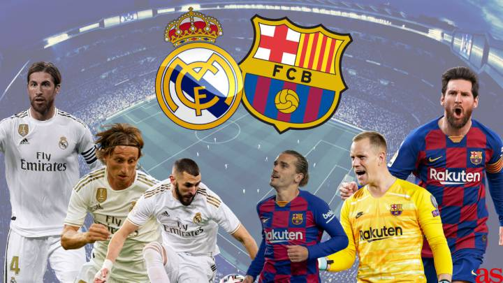

După îndelungi schimbări de terenuri, echipa s-a stabilit pe Campo de O'Donnell în 1912, care a devenit stadionul de casă al clubului pentru următorii 11 ani.După această perioadă, în următorul an, clubul a evoluat pe Campo de Ciudad Lineal, un mic teren cu o capacitate de 8.000 de locuri. După asta, Real Madrid și-a schimbat din nou arena de casă, aceasta devenind Estadio Chamartín care a fost inaugurat pe 17 mai 1923, într-un meci contra lui Newcastle United.Pe acest stadion, care găzduia 22.500 de spectatori, Real Madrid a celebrat primul său titlu de campion în Spania. A urmat o perioadă cu succese, și în 1943 noul președinte ales, Santiago Bernabéu a decis că Estadio Chamartín nu este îndeajuns de mare pentru ambițiile clubului. Un nou stadion a fost construit și inaugurat pe 14 decembrie 1947.Acesta a fost Stadionul Santiago Bernabéu după cum e cunoscut în prezent, nume pe care l-a primit în 1955.Primul meci ținut pe Bernabéu a fost între Real Madrid și clubul portughez Belenenses, meci câștigat de „albi” cu 3–1, primul gol pe noul stadion fiind marcat de Sabino Barinaga.
Capacitatea stadionului varia frecvent, atingând apogeul de 120.000 de locuri după extinderea din 1953.De atunci au avut loc un număr de reduceri pentru modernizare și securitate, dar și câteva extinderi.Ultima modificare a fost o extindere de aproximativ 5000 de locuri ajungându-se la capacitatea de 85.454, schimbare făcută în 2011. A fost anunțat planul de a se adăuga un acoperiș retractabil.Real Madrid are a patra cea mai mare prezență medie de spectatori în Europa, după Borussia Dortmund, FC Barcelona și Manchester United.
Santiago Bernabéu a găzduit finala Campionatului European de Fotbal din 1964, Finala Campionatului Mondial de Fotbal 1982, Finala Cupei Campionilor Europeni 1957, Finala Cupei Campionilor Europeni 1969 și Finala Cupei Campionilor Europeni 1980, dar și Finala Ligii Campionilor 2010.[84] Stadionul are propria sa stație de metrou, Madrid Metro, de pe linia 10, numită Santiago Bernabéu.[85] Pe 14 noiembrie 2007, Bernabéu a fost apreciat de UEFA cu statutul Stadion de Fotbal de Elită.
Pe 9 mai 2006, Stadionul Alfredo Di Stéfano a fost inaugurat în Madrid, fiind locul unde Real Madrid de obicei susține antrenamentele. Meciul inaugural s-a jucat între Real Madrid și Stade Reims, o reeditare a Finalei Cupei Europene din 1956. Real Madrid a câștigat meciul cu 6–1 prin golurile lui Sergio Ramos, Cassano (2), Soldado (2), și Jurado. Acum stadionul face parte din Ciudad Real Madrid, un complex propriu al clubului, situat înafara Madridului, în Valdebebas. Arena are o capacitate de 5.000 de locuri și este stadionul de casă al echipei a doua a clubului - Real Madrid Castilla. Este denumit în cinstea fostului jucător al Realului, Alfredo Di Stéfano.
Rivalitate El Clasico
Rivalitatea dintre Real Madrid și FC Barcelona este legendară. De-a lungul timpului acest derby a fost supranumit El Clásico (Clasicul). Încă de la început cluburile erau văzute ca reprezentante ale două regiuni rivale ale Spaniei, Castilia și Catalonia, precum și ale celor două orașe pe care le reprezentau. Însă rivalitatea a atins un nou nivel în timpul perioada lui Miguel Primo de Rivera și mai  ales a lui Franco, când Real Madrid era considerată a fi "echipa regimului", în timp ce FC Barcelona era menționată ca echipa a opoziției. Toate limbile vorbite pe teritoriul Spaniei cu excepția spaniolei Castiliane, erau interzise.Ambele cluburi, însă, dețineau membri proeminenți ale căror credințe politice dezaprobau această teorie. În timpul Războiului civil spaniol președintele lui Real Madrid, Rafael Sanchez Guerra, era un proeminent republican și a fost întemnițat și torturat de către suporterii naționaliști. Tot ei i-au arestat și ucis pe vice-președintele și trezorierul clubului.În anii 1950 rivalitatea exacerba în continuare, motivul fiind și transferul controversat al lui Alfredo Di Stéfano, vare inițial s-a transferat de la Millonarios la FC Barcelona, dar din careva probleme, contractul nu a fost recunoscut de către FIFA, și apoi în timpul renegocierilor Di Stefano nu a mai semnat cu Barcelona, ci a trecut la Real Madrid, unde ulterior era să devină cheia succesului.Anii 1960 aduc rivalitatea pe plan european, când cele două cluburi s-au întâlnit de două în faza eliminatorie a Cupei Europene.[66] În 2002, întâlnirea celor două cluburi în Liga Campionilor a fost supranumită "Meciul Secolului" de către mass-media, și a fost urmărită de peste 500 de milioane de oameni în întreaga lume.
Rivalitate El Derbi madrileño
Cel mai apropiat vecin al clubului este Atlético Madrid, cu care s-a stabilit o rivalitate reciprocă dintre fanii echipelor. Deși Atlético a fost inițial fondată de trei studenți basci în 1903, la echipă s-au alăturat în 1904 câțiva membri disidenți de la Madrid FC. Ulterior tensiunea s-a intensificat deoarece suporterii lui Real se trag din clasa mijlocie a populației, în timp ce suporterii lui Atlético se trag din rândurile clasei muncitorești. În prezent aceste distincții sunt vag dispersate. Cluburile s-au întâlnit prima dată pe 21 februarie 1929 în etapa a treia din sezonul La Liga 1929 pe fostul Estadio Chamartín. A fost primul derby oficial al noii competiții, pe care Real l-a câștigat cu 2–1.
Rivalitatea a atras atenția internațională pentru prima dată în 1959 în cadrul Cupei Europene, când cele două cluburi s-au întâlnit în semifinale. Real a câștigat manșa tur cu 2–1 pe Bernabéu, iar Atlético a câștigat returul cu 1–0 pe Metropolitano. Egalitatea scorului la general a dus la rejucarea meciului, și albii s-au impus cu 2–1. Apoi Atlético s-a răzbunat totuși, fiind condusă de fostul antrenor al lui Real Madrid, José Villalonga, ea a învins clubul regal în finala Copa del Generalísimo din 1960 și apoi 1961.
Între 1961 și 1989, pe când Real domina La Liga, doar Atlético îi oferea o concurență pe măsură, câștigând titlurile în 1966, 1970, 1973 și 1977. În 1965, Atlético devine prima echipă care câștigă în fața Realului pe Bernabéu în ultimii opt ani. În perioada mai recentă, prestația lui Real Madrid în fața lui Atlético este foarte favorabilă.[68] Punctul de apogeu vine în sezonul 2002–03, Când Real Madrid cucerește titlul în La Liga după o victorie impresionantă asupra lui Atlético cu scorul de 0–4 chiar pe Stadionul Vicente Calderón, acasă la rivală.
 fost construit și inaugurat pe 14 decembrie 1947.Acesta a fost Stadionul Santiago Bernabéu după cum e cunoscut în prezent, nume pe care l-a primit în 1955.Primul meci ținut pe Bernabéu a fost între Real Madrid și clubul portughez Belenenses, meci câștigat de „albi” cu 3–1, primul gol pe noul stadion fiind marcat de Sabino Barinaga.
Capacitatea stadionului varia frecvent, atingând apogeul de 120.000 de locuri după extinderea din 1953.De atunci au avut loc un număr de reduceri pentru modernizare și securitate, dar și câteva extinderi.Ultima modificare a fost o extindere de aproximativ 5000 de locuri ajungându-se la capacitatea de 85.454, schimbare făcută în 2011. A fost anunțat planul de a se adăuga un acoperiș retractabil.Real Madrid are a patra cea mai mare prezență medie de spectatori în Europa, după Borussia Dortmund, FC Barcelona și Manchester United.
Santiago Bernabéu a găzduit finala Campionatului European de Fotbal din 1964, Finala Campionatului Mondial de Fotbal 1982, Finala Cupei Campionilor Europeni 1957, Finala Cupei Campionilor Europeni 1969 și Finala Cupei Campionilor Europeni 1980, dar și Finala Ligii Campionilor 2010.[84] Stadionul are propria sa stație de metrou, Madrid Metro, de pe linia 10, numită Santiago Bernabéu.[85] Pe 14 noiembrie 2007, Bernabéu a fost apreciat de UEFA cu statutul Stadion de Fotbal de Elită.
Pe 9 mai 2006, Stadionul Alfredo Di Stéfano a fost inaugurat în Madrid, fiind locul unde Real Madrid de obicei susține antrenamentele. Meciul inaugural s-a jucat între Real Madrid și Stade Reims, o reeditare a Finalei Cupei Europene din 1956. Real Madrid a câștigat meciul cu 6–1 prin golurile lui Sergio Ramos, Cassano (2), Soldado (2), și Jurado. Acum stadionul face parte din Ciudad Real Madrid, un complex propriu al clubului, situat înafara Madridului, în Valdebebas. Arena are o capacitate de 5.000 de locuri și este stadionul de casă al echipei a doua a clubului - Real Madrid Castilla. Este denumit în cinstea fostului jucător al Realului, Alfredo Di Stéfano.
fost construit și inaugurat pe 14 decembrie 1947.Acesta a fost Stadionul Santiago Bernabéu după cum e cunoscut în prezent, nume pe care l-a primit în 1955.Primul meci ținut pe Bernabéu a fost între Real Madrid și clubul portughez Belenenses, meci câștigat de „albi” cu 3–1, primul gol pe noul stadion fiind marcat de Sabino Barinaga.
Capacitatea stadionului varia frecvent, atingând apogeul de 120.000 de locuri după extinderea din 1953.De atunci au avut loc un număr de reduceri pentru modernizare și securitate, dar și câteva extinderi.Ultima modificare a fost o extindere de aproximativ 5000 de locuri ajungându-se la capacitatea de 85.454, schimbare făcută în 2011. A fost anunțat planul de a se adăuga un acoperiș retractabil.Real Madrid are a patra cea mai mare prezență medie de spectatori în Europa, după Borussia Dortmund, FC Barcelona și Manchester United.
Santiago Bernabéu a găzduit finala Campionatului European de Fotbal din 1964, Finala Campionatului Mondial de Fotbal 1982, Finala Cupei Campionilor Europeni 1957, Finala Cupei Campionilor Europeni 1969 și Finala Cupei Campionilor Europeni 1980, dar și Finala Ligii Campionilor 2010.[84] Stadionul are propria sa stație de metrou, Madrid Metro, de pe linia 10, numită Santiago Bernabéu.[85] Pe 14 noiembrie 2007, Bernabéu a fost apreciat de UEFA cu statutul Stadion de Fotbal de Elită.
Pe 9 mai 2006, Stadionul Alfredo Di Stéfano a fost inaugurat în Madrid, fiind locul unde Real Madrid de obicei susține antrenamentele. Meciul inaugural s-a jucat între Real Madrid și Stade Reims, o reeditare a Finalei Cupei Europene din 1956. Real Madrid a câștigat meciul cu 6–1 prin golurile lui Sergio Ramos, Cassano (2), Soldado (2), și Jurado. Acum stadionul face parte din Ciudad Real Madrid, un complex propriu al clubului, situat înafara Madridului, în Valdebebas. Arena are o capacitate de 5.000 de locuri și este stadionul de casă al echipei a doua a clubului - Real Madrid Castilla. Este denumit în cinstea fostului jucător al Realului, Alfredo Di Stéfano.